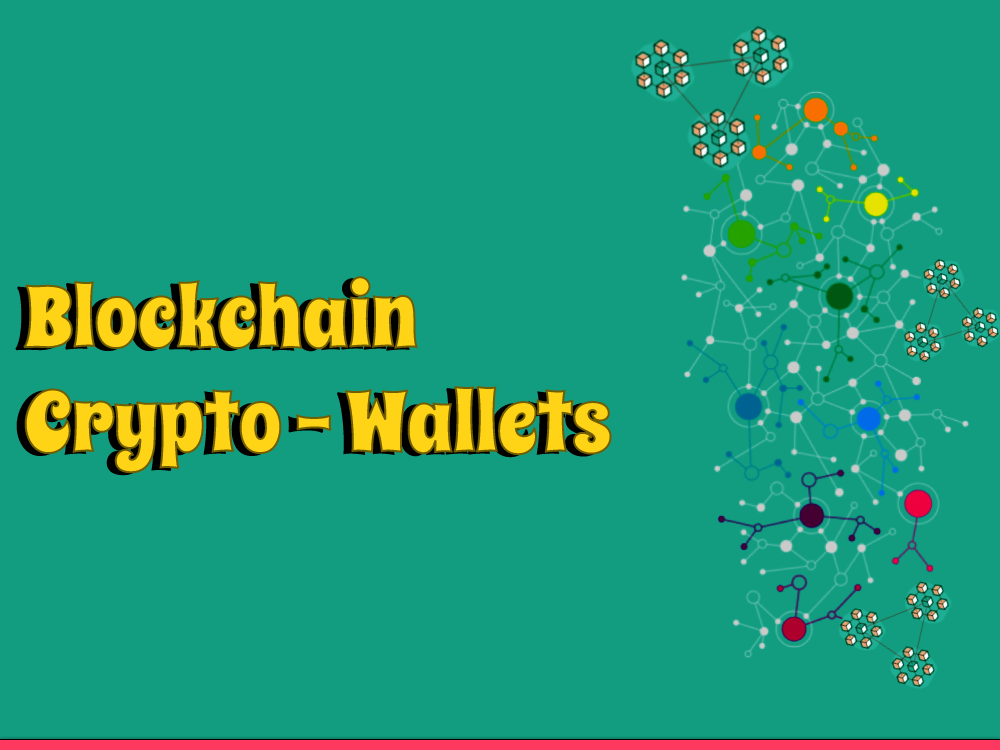

Cryptocurrencies have gained immense popularity in recent years, and with their rise, the need for secure storage solutions has become paramount. Cryptowallets, also known as digital wallets, play a crucial role in securely storing and managing cryptocurrencies. In this blog post, we will delve into the world of cryptowallets, exploring their types, features, and best practices for keeping your digital assets safe.
I. Understanding Cryptowallets
Cryptowallets are digital tools that enable users to securely store, manage, and interact with their cryptocurrencies. As the world of digital currencies, such as Bitcoin and Ethereum, continues to expand, understanding how cryptowallets function is crucial for anyone interested in participating in the crypto space.
A. Definition and Purpose of Cryptowallets
Cryptowallets are digital tools that store and manage private keys, which are required to access and control cryptocurrencies.
They serve as a bridge between the blockchain and users, allowing them to send, receive, and store cryptocurrencies securely.
B. How Cryptowallets Work
Cryptowallets generate and store pairs of cryptographic keys: a public key and a private key.
Public keys are shared with others to receive funds, while private keys must be kept confidential and are used to sign transactions.
C. Key Terminologies
Public and Private Keys
Public keys are like a public address, whereas private keys are secret and should never be shared.
Wallet Addresses
Cryptowallets generate unique addresses derived from public keys, which are used to send and receive cryptocurrencies.
II. Types of Cryptowallets
A. Software Wallets
These wallets can be downloaded and installed on your computer or mobile device. They provide easy access to your cryptocurrencies and allow you to manage your funds directly from your device. Examples include desktop wallets, mobile wallets, and online wallets.
Desktop Wallets
These wallets are installed and run on desktop computers or laptops, providing full control and security over private keys.
Mobile Wallets: Designed for smartphones and tablets, mobile wallets offer convenience and portability for managing cryptocurrencies on the go.
Online (Web-based) Wallets
These wallets operate on the cloud and can be accessed through web browsers, making them accessible from any device with an internet connection.
B. Hardware Wallets
Hardware wallets are physical devices specifically designed for storing private keys offline, offering enhanced security against hacking attempts.
Popular hardware wallets include Ledger Nano series, Trezor, and KeepKey, which provide a secure environment for key management and transaction signing.
C. Paper Wallets
A paper wallet involves generating a physical copy of your public and private keys on paper. It is a cold storage option that keeps your keys offline. However, caution must be exercised to protect the paper wallet from damage or loss.
Creating and Using Paper Wallets
Paper wallets involve generating and printing private and public keys onto paper. They are stored physically and are considered offline wallets.
Pros and Cons of Paper Wallets
Paper wallets offer increased security by being completely offline, but they require careful handling to avoid loss or damage.
III. Factors to Consider When Choosing a Cryptowallet
A. Security Features
Look for wallets with features like encryption, multi-factor authentication, and secure seed phrase generation.
B. User-Friendliness and Accessibility
Consider wallets with intuitive interfaces and compatibility with your preferred devices or operating systems.
C. Supported Cryptocurrencies
Ensure that the wallet supports the specific cryptocurrencies you want to store and manage.
D. Backup and Recovery Options
Check if the wallet provides backup mechanisms, such as seed phrases or private key exports, to recover access in case of loss or device failure.
E. Reputation and Trustworthiness of Wallet Providers
Research and choose wallets from reputable providers with a track record of security and user satisfaction.
IV. Best Practices for Cryptowallet Security
A. Strong Passwords and Authentication Methods
Use complex passwords and consider enabling additional security measures like biometrics or hardware authentication.
B. Two-Factor Authentication (2FA)
Enable 2FA to add an extra layer of security to your wallet and protect against unauthorized access.
C. Regular Software Updates
Keep your wallet software up to date to benefit from the latest security patches and improvements.
D. Offline Storage and Cold Wallets
Consider keeping a portion of your funds in cold wallets or offline storage devices to protect against online threats.
E. Backup and Recovery Strategies
Implement regular backups of wallet data, such as seed phrases or private keys, and store them securely in multiple locations.
V. Common Mistakes to Avoid
A. Falling for Phishing Attacks and Scams
Be cautious of malicious websites, emails, or messages that try to trick you into revealing your wallet information.
B. Using Untrusted Wallet Providers
Research and choose wallets from reputable sources to minimize the risk of using insecure or fraudulent wallets.
C. Neglecting Regular Backups and Updates
Failure to back up wallet data or update wallet software can result in the loss of funds or exposure to vulnerabilities.
D. Storing Wallet Information in Insecure Locations
Avoid storing wallet details in unencrypted digital files or insecure physical locations that could be accessed by unauthorized individuals.
VI. Additional Tips and Resources
A. Keeping Track of Wallet Transactions
Utilize blockchain explorers or built-in features of wallets to monitor and verify transaction history.
B. Importance of Regularly Monitoring Cryptowallets
Stay vigilant by monitoring wallet activity and be aware of any unusual or unauthorized transactions.
C. Resources for Learning More About Cryptowallets
Provide a list of reputable resources, such as official wallet documentation, cryptocurrency forums, and educational websites, to help users deepen their understanding of cryptowallets.
Conclusion
Cryptowallets are indispensable tools for securely storing and managing cryptocurrencies. Understanding the different types of wallets available, considering key factors in wallet selection, and implementing best security practices are essential steps in safeguarding your digital assets.
By staying informed and adhering to responsible wallet management practices, you can enjoy the benefits of cryptocurrencies while minimizing the associated risks.